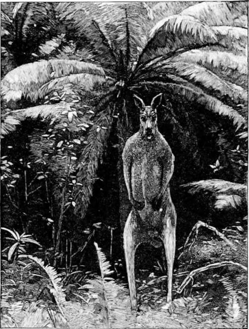
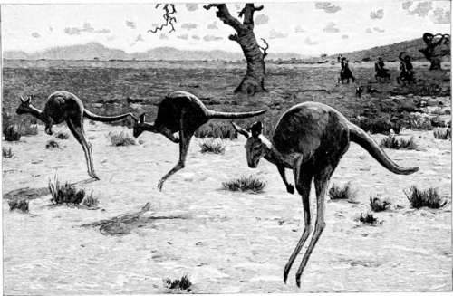

A Kangaroo Hunt. Part 2
Description
This section is from the book "Hunting", by Archibald Rogers. Also available from Amazon: Hunting.
A Kangaroo Hunt. Part 2
For some time after arriving in Australia, I was almost in despair of being able to gratify my ardent desires in the way of kangaroo hunting. Indeed, the difficulty and uncertainty of the quest seemed so great that I had nearly relinquished all hope of adding the great marsupial to my sportsman's tally, and had regretfully concluded to content myself with wallaby, parrots, ducks, and the ubiquitous bunny, when, by the merest chance, I stumbled upon an exciting and quite successful kangaroo hunt. Before describing this little experience, however, it will be necessary to explain briefly a few of the peculiarities of the queer quadruped in question; for the ways of the kangaroo are as the ways of no other animal upon the face of the globe, and all systems of hunting which are employed elsewhere have had to be modified to meet some of the strange instincts and habits of this most original of beasts.
To begin with, the kangaroo is a marsupial, or pouch-bearer, the females of the species being provided with a peculiar furry sack under the belly, in which they dispose their young in case of sudden attack or need of hasty flight. But as nearly all the other native animals of Australia are also marsupial, even down to the modest little field-mouse, the naturalists have been sorely puzzled to place each specimen in its own proper niche; and it would be a brave man of science who would to-day assert positively that some specious stranger had not been allowed to slip unawares into the family group, and some true, though distant, relative had not been unduly excluded therefrom. However, the naturalists have agreed that there are about thirty distinct varieties of the kangaroo proper, ranging in size from the giant red kangaroo of Queensland, which averages eight feet in height, down to the funny little kangaroo rat of Victoria, which averages little more than eight inches. But leaving to one side the Queensland monster and the various species of wallaby, wallaroo, etc., it may be stated in general terms that the true kangaroo, the fellow to whom the term belongs par excellence, is the one known to naturalists as the Macropus gigan-teus. This is a smooth-haired, mouse-colored animal, which usually stands about six feet high, and only very occasionally attains to the proportions of its Queensland cousin. The word "stand," employed in the preceding sentence, is used advisedly, and is intended to carry the fullest and most exact meaning of the term; for another singular characteristic of the kangaroo is this biped habit. Save when feeding or lying down, it always maintains an upright position, and the small fore-paws, which closely resemble a pair of diminutive hands, are never used as a means of progression. This peculiarity of the kangaroo (added to another of which I shall have to speak farther on) renders it one of the most difficult animals in the world to stalk successfully; for in every feeding herd there is sure to be at least one vigilant "old man" always standing upon guard, and his upright position, of course, enables him to survey the whole horizon round about him, and to note any unusual object long before it could approach within decent range. When feeding quietly they sometimes drag themselves along on all fours; but their usual gait is a series of quick hops upon the two hind feet, the rest of the body remaining bunched together in a little, round, rigid ball, which never alters in shape so long as the animal is in motion. It is scarcely necessary to say that the impression produced upon an unaccustomed spectator by a fleeing kangaroo is most curious and original. To convey some idea of this comical performance, I can find no better simile than that of a rather dumpy sweet-potato which has been rounded off at the lower extremity, and is propelled by a pair of automatically moving match-sticks. Suppose another slightly curved match to be inserted for a tail, and you have a very fair presentment of the kangaroo in motion. In the illustration upon page 177, I have attempted to render something of this peculiar movement; but I am aware that I have been only partially successful, for, of course, it was impossible to portray upon a fixed surface the series of great undulating bounds which are its distinguishing characteristic. At first sight the motion appears rather slow and lazy; but this is an optical delusion, which gradually wears away as the vision becomes accustomed to the surroundings, and is able to make comparisons. In point of fact, every one of those great hops covers twenty or thirty feet of ground; and, when the occasion demands it, a full-grown animal can speed across country at a pace which will try the mettle of the very fleetest horse. To the above particulars I have only to add that the kangaroo is entirely herbivorous in his dietetic habits, and that the home of his choice is the sparse woodland bordering upon great plains, where he is assured at once of abundant pasture and of a ready shelter from his enemies.
An "Old Man" under a Fir-tree.
At Close Quarters
And now for my own little adventure. It was, after all, only a wee, small adventure, and is therefore presented with becoming diffidence; but as it was also a genuine adventure so far as it went, it is put forth with the feeling that it may perhaps have a certain historic value. I give what I have to give, wishing it were more.
It came about in this wise. I was visiting at a certain sheep-station on the Fiery Creek plains in western Victoria, when my friend R. proposed that we should take a week's holiday upon Mount Cole —partly for the sake of a change from the routine of station life, and partly with an eye to securing a few skins of the great sulphur-crested cockatoo. These lovely birds rarely venture down upon the open plains, but are usually to be found in abundance in the sombre eucalyptus forests upon the hills. Mount Cole is one of the loftiest spurs of the great dividing range of southern Australia; and, although its highest point is only four thousand feet above the sea-level, its commanding position upon the great plains of the Wimera and Fiery Creek lends it a certain imposing grandeur. It is clothed from base to summit with a great forest of giant eucalyptus, which was, not many years since, the refuge for countless thousands of kangaroos. But it is scarcely necessary to state that these animals are very rarely seen here of late years; and it was certainly with no anticipation of kangaroo hunting that we set off from the "station" that frosty June morning. Indeed, when R. put a small rifle into the trap, just before starting, it was with a joke and a smile that showed the entirely perfunctory nature of the operation. There were a couple of good breech-loading guns, however, and a liberal supply of No. 3, No. 6, and No.
Continue to: